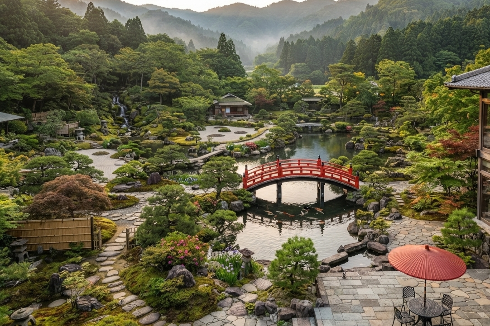
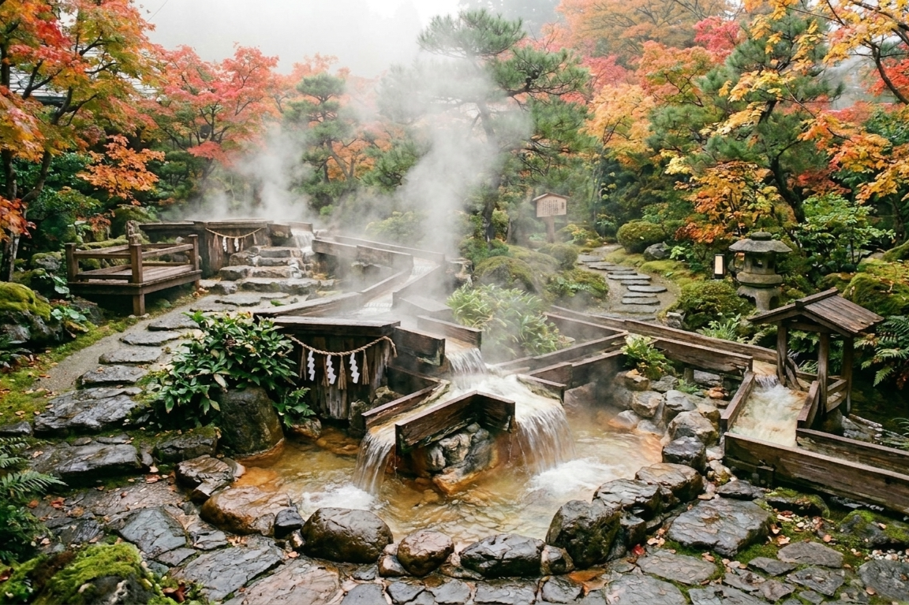
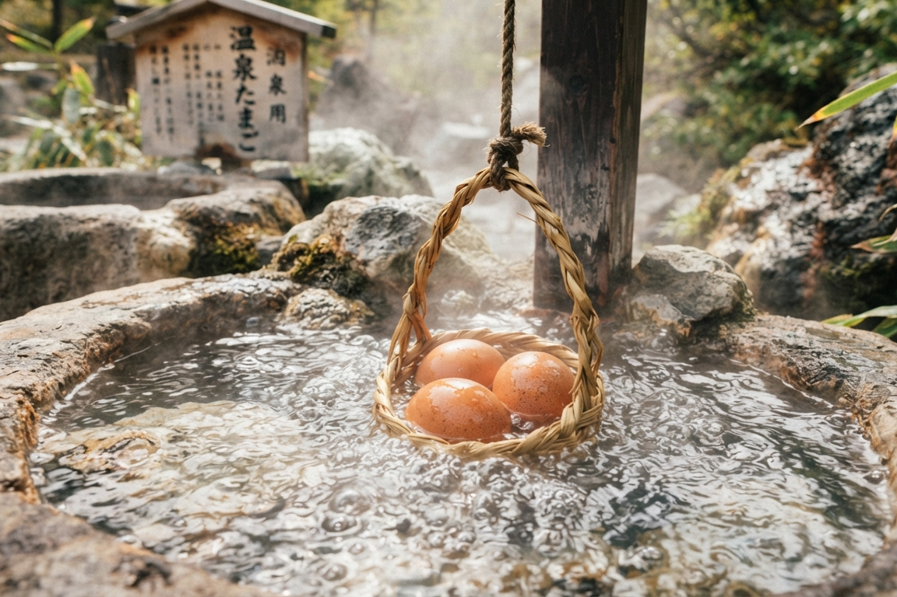
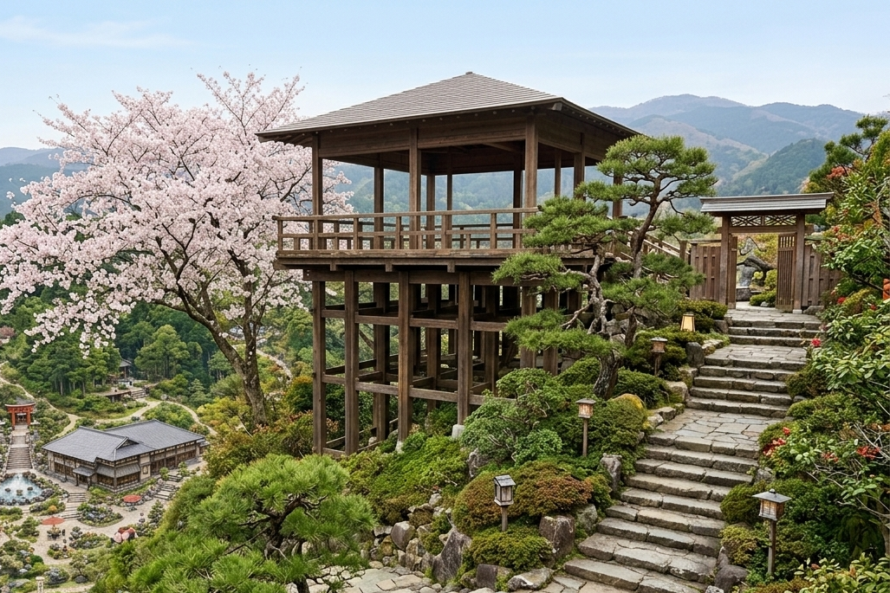
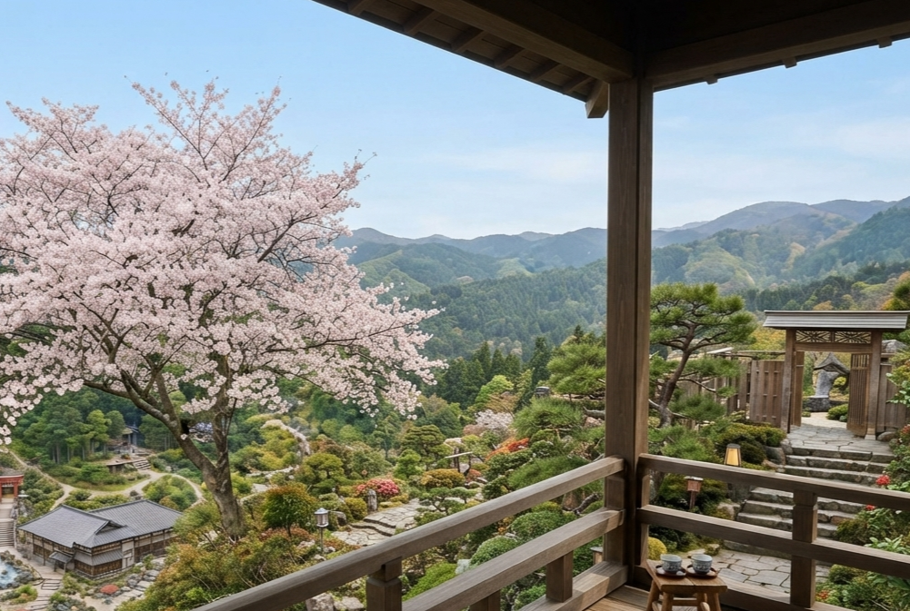
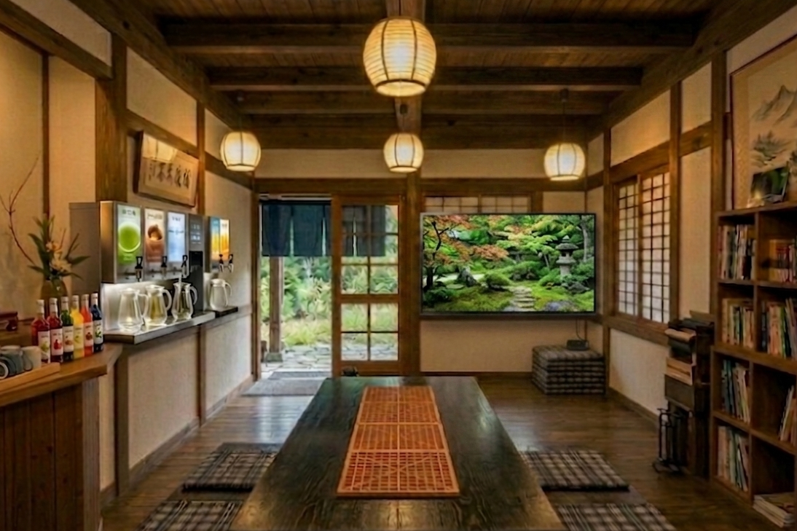

 JAPANESE GARDEN 日本庭園 四季の移ろいを感じながら、ゆっくりと歩いて楽しめる日本庭園です。 小径を歩き、水の音に耳を傾け、ゆったりとした時間をお過ごしください。 池の鯉や鳥たちに餌をあげたり、猫に出会うこともあります。
  YUBATAKE 湯畑 庭園の中に広がる、温泉地ならではの景色。 立ち上る湯けむりや温泉の香りをお楽しみいただけます。 温泉卵作りも体験いただけます。
  OBSERVATORY 展望台 庭園を少し高い場所から眺められる展望台。 季節によって表情を変える木々や、 遠くまで広がる景色をお楽しみいただけます。
 REST AREA 休憩所 庭園の散策途中に、ひと息つける場所。 夏は涼しく、冬は暖かい休憩所です。 散策に疲れたり、貸切風呂の待合にお使いください。 KOKAGE 木陰休憩所 木に設けられた、二階建ての休憩所。 ツリーハウス型になっており、二階からの眺めは格別です。 IWA-KAGE 岩陰休憩所 洞窟に設けられた、落ち着いた雰囲気の休憩場所。 秘密基地のような落ち着く空間です。